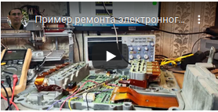
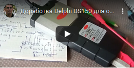
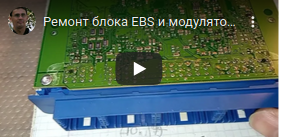
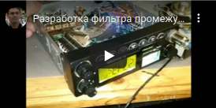
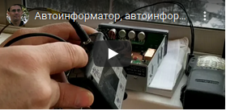
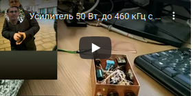
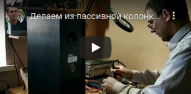
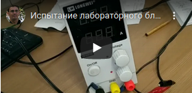
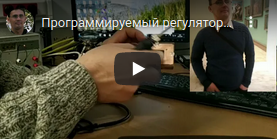

Ремонт

Ремонт блока управления VOLVO

Доработка Delphi DS100

Ремонт EBS грузового автомобиля

Адаптивное освещение автомобиля

Сигнализация с обратной связью на 433 МГц

Дальний прием на частотах 27 МГц и 88-108 МГц.

Автоинформатор + ЭХО репитер

Автоинформатор для радиостанции V3

Снижение собственных шумов у приемника радиостанции

Разработка фильтра ПЧ 10.7 МГц для приемника радиостанции
Раскрытие радиостанции TH-9800 c 14 МГц до 1000 МГц.

Распаяка SSD-разьма для установки диска в ноутбук.

УНЧ с защитой от смены полярности напряжения
и с полосой пропускания до 470 кГц.

Активно и пассивная аудио олонка.

Источник с низким уровнем излучения электромагнитных помех.

Испытание импульсного блока питания на уровень излучения помех в диапазоне от 0.1 МГц до 1000 МГц.

Ремонт ИБП мощностью 1кВт.

Программируемый регулятор температуры для паяльника 12В

Программируемый аттенюатор до -31 Дб до 3 ГГц.